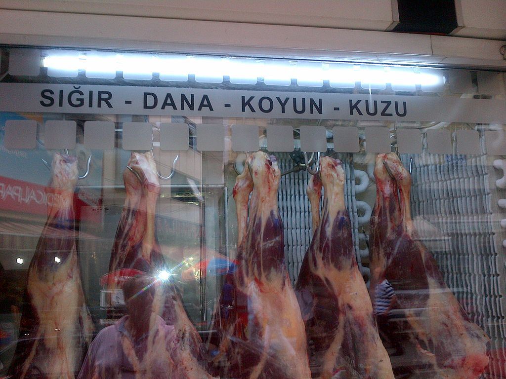

Carnes rojas en una carnicería de Samsun, Turquía.
De izquierda a derecha los letreros dicen: Carne de res, ternera, oveja y cordero.
En términos culinarios, carne roja hace referencia a una carne que presenta un color rojo o
rosado en estado crudo.1 Desde el punto de vista de la nutrición, el término "carne roja"
se refiere exactamente a la carne proveniente de los mamíferos. En oposición
a la carne roja se emplea el término carne blanca, que desde el punto de vista culinario
hace referencia a cualquier carne que en crudo y al cual presenta colores pálidos o blanquecinos;
mientras que la definición usada en la nutrición especifica que la carne blanca
es la procedente de las aves. Nótese que, en esta categoría, la definición
de 'carne' excluye la carne de animales marinos, como la "carne del pescado" así
como la de los "insectos" (entomofagia).
La definición culinaria no es una definición científica y por esta razón
tiene muchas reglas y excepciones. Se puede decir que por regla general toda la carne proveniente de
mamíferos, por ejemplo vacuno (sobre todo la carne procedente de la vaca),
la carne de caballo, de toro, la carne procedente de la caza: jabalíes, venado, etcétera
aunque en el terreno de la carne de caza se considera carne roja también a las aves tales
como los pichones, las perdices, la codorniz y el faisán. No obstante la carne de caza
se suele poner toda ella a veces en una categoría aparte (en francés viandes noires
'carnes negras').
De la misma forma algunas aves de corral suelen considerarse blancas, aunque existe una excepción
ya que la definición culinaria menciona al pato y al ganso como aves consideradas
dentro del grupo de la carne roja,3 En el caso de algunos animales la definición culinaria de
la carne roja difiere en la carne del mismo animal, a veces se hace distinción por edad del
animal cuando fue sacrificado, la carne de cerdo se considera roja si el animal es adulto,
pero blanca si es joven (cochinillo) y lo mismo es aplicable a la carne de cordero
(cordero pascual y cordero lechal). A veces la distinción es por la posición o
corte de la pieza dentro del mismo animal; de esta forma el solomillo es considerado
como carne roja, y sin embargo el lomo se denomina generalmente como carne blanca.
El principal determinante del color rojizo de la carne es la concentración de mioglobina.
La carne blanca del pollo tiene valores de mioglobina por debajo del 0,05 %;
algunas partes como el muslo pueden llegar a 0,18-0,20 %; el cerdo y el filete de vaca están
entre 0,1-0,3 %; la ternera está en 0,4-1,0 %; y una vaca vieja tiene 1,5-2,0 %.4
Este criterio podría poner ambas definiciones, la culinaria y la nutricionista, de acuerdo.
Nutrición
En nutrición la definición es muy sencilla de seguir ya que se circunscribe tan sólo
a la carne de los mamíferos. Esta definición conduce a confusión ya que la
carne cruda de algunos animales no mamíferos es también de color roja. La definición
no tiene nada que ver con el color de la carne cuando se cocina, en raros casos la carne cocinada
es de color rojo (excepto si se sirve 'poco cocida') en el caso de carne de vacuno se pone marrón
y en la carne de cerdo suele tomar un color pálido al ser cocinada.
Consumo apropiado
El consumo apropiado de carnes rojas se establece por algunos organismos sanitarios nacionales6
y en los consejos mencionan el uso equilibrado de carnes rojas y blancas en una dieta equilibrada
y la cantidad se fija en 4 raciones a la semana (pasado del 50 % en carnes blancas) y de
forma ocasional comer entre 2 o 3 veces al mes platos con carne roja.
¿De estas carnes cuáles son rojas?
Pollo
Pavo
Caballo
Cabra
Se suele señalar que la tradicional pirámide de nutrición no
ha sido capaz de distinguir entre carnes rojas y blancas.[cita requerida]
La nueva pirámide toma en cuenta diferentes tipos de carnes.7 La pirámide de
la alimentación sana recomienda que el consumo y de carnes rojas sea
frecuente pero de forma muy moderada.8
Dietas
Existen deficiones relacionadas con las dietas vegetarianas, por ejemplo una persona que
evita comer tan sólo carne roja (pudiendo comer carne blanca) es denominado
un semi-vegetariano o puede caer en una categoría más amplia: flexitariano.
También se evitan este tipo de productos cárnicos en casos de
hipercolesterolemia ya que éstas son ricas en grasas saturadas.
Asimismo, quienes sufren de hiperuricemia (elevación del ácido úrico
en la sangre) deben evitar todo tipo de productos cárnicos, incluyendo
las carnes blancas, debido a la degradación de las purinas.
Cáncer
El American Institute for Cancer Research y el World Cancer Research Fund afirma,
en su reporte "Food, Nutrition, Physical Activity, and the Prevention of Cancer: a Global Perspective",
que existe evidencia convincente de que el consumo excesivo de carnes rojas
incrementa el riesgo de cáncer colorectal, y que hay evidencia de que incrementa el riesgo de
cáncer en el esófago, pulmones, páncreas y endometrio.
La lista, no exhaustiva, de carnes rojas es la siguiente: